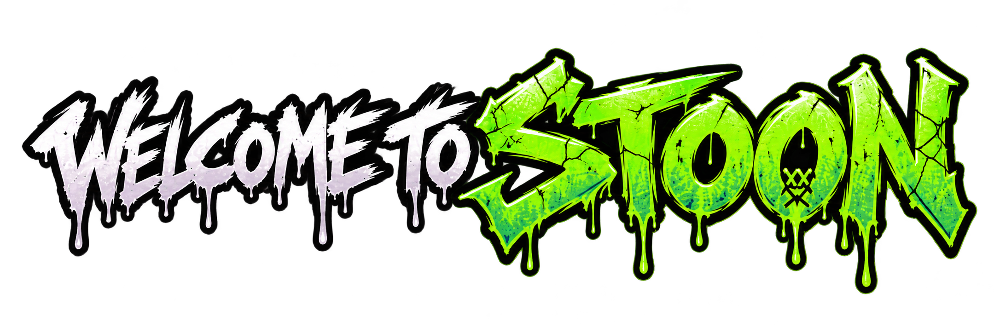

THE DEAD DON'T STAY DEAD.
Stoon is a city coming apart at the seams. The dead are rising, streets are being abandoned, and those left alive are discovering that the outbreak isn't the only thing they need to fear.
Above ground, a gang known as the Crowned is claiming territory as the old rules collapse. Beneath the cemetery, a secretive cult pursues its own agenda, and the city's growing nightmare may be more deliberate than it first appears.
At the center are Bug, Goose, Blue, and Uncle—four unlikely survivors with their own clashing personalities, secrets, and reasons to keep moving. As they cross paths with dangerous factions and increasingly strange undead, they discover that simply staying alive might not be enough.
Stories of Stoon blends zombie survival horror with crooked humor, strange conspiracies, and a gritty black-and-white comic aesthetic. It's a story about what people do when the familiar world disappears—and who tries to take control of what remains.

THE INSTITUTE OF UNCERTAINTY
The Institute of Uncertainty is the creative identity behind Stories of Stoon. Its dispatches from the city blend horror, offbeat characters, uneasy mysteries, and a little dark humor. Through the graphic novel and the transmissions around it, the Institute invites readers to explore a world where every answer leads to a stranger question.
The first volume is in preparation. You can read the free preview now and join the Survivor Network to receive exclusive artwork, story transmissions, and release alerts.